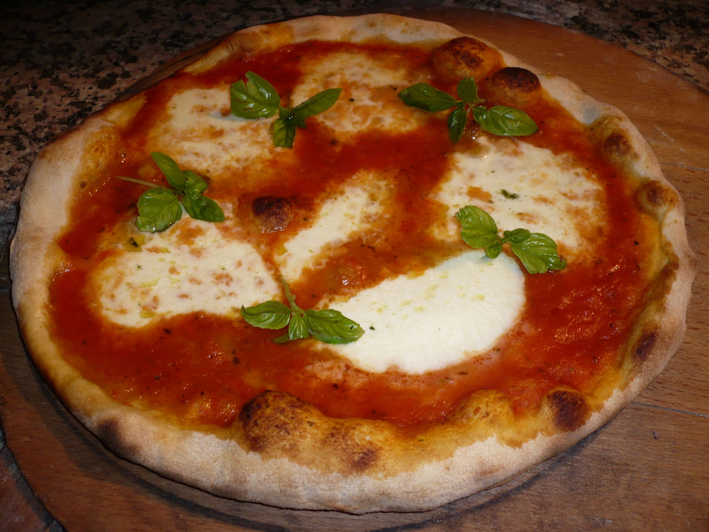

Pizza

Description
Pizza Margherita (pronounced mahr-geh-ree-tah) is basically a Neapolitan pizza,
typically made with tomatoes, mozzarella cheese, garlic, fresh basil, and extra-virgin olive oil.
I think of it as a sophisticated version of your basic cheese pizza and also a wonderful Caprese salad, but with a crust.
It's so easy to make!
Ingredients
- Homemade Pizza Dough
- Homemade Marinara Sauce
- Tomatoes
- Fresh Mozzarella Cheese
- Fresh Basil
- Garlic
- Extra-virgin Olive Oil
Steps
- Place a pizza stone in the oven. Preheat to around 260 degrees Celsius.
- Shape the pizza and transfer it to a pizza peel lined with parchment paper.
- Gently brush the dough with olive oil, spread the marinara sauce, top with tomatoes and mozzarella with spaces in between.
- Slide the parchment onto the heated stone and bake for 8-10 minutes, until crust is golden and cheese is bubbly and melted.
- Remove from oven and sprinkle the basil over the top.
- Cut into wedges and serve immediately
Return